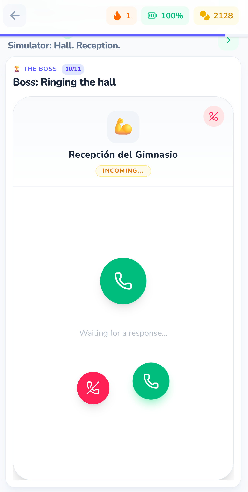
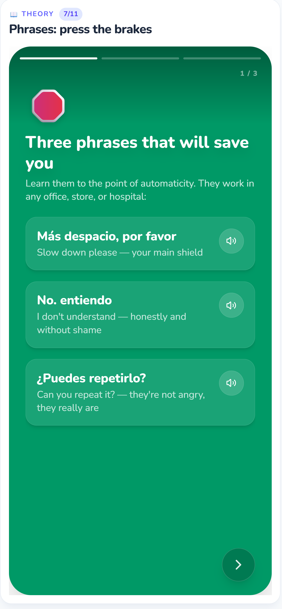
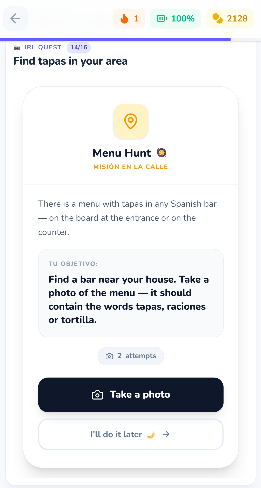
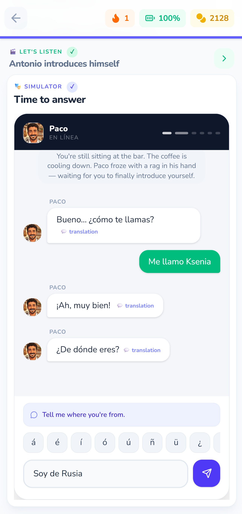
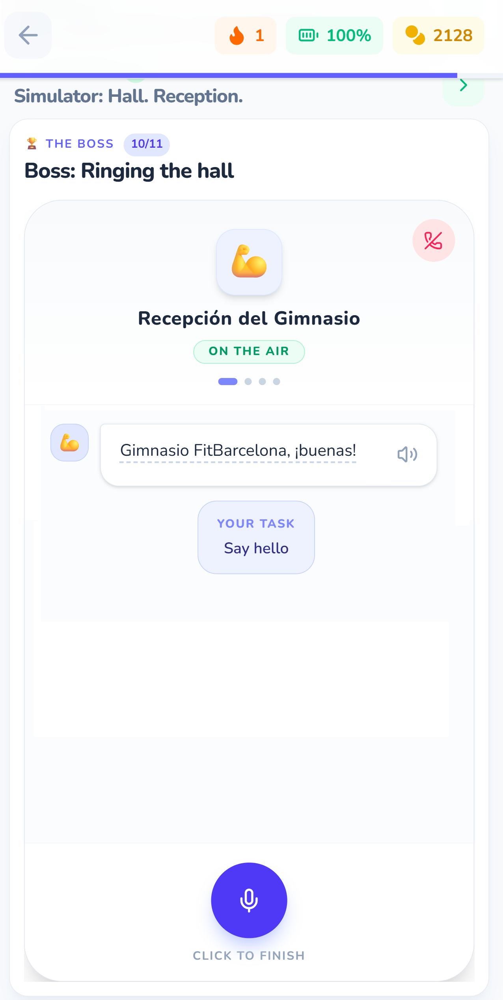
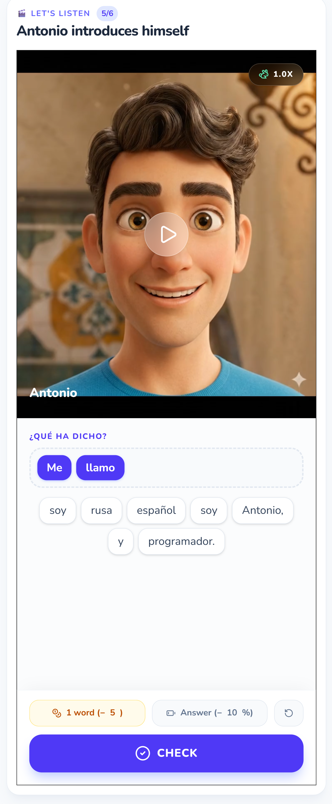

An AI-native Spanish learning product designed for Russian-speaking expats who need to survive their first month in Spain — not pass a grammar exam.

"I absolutely loved it. Grammar and immediate practice; explanations of traditions and things that will actually come in handy in real life; the photo assignments are cool and fresh; hidden translations (you can think about the translation before checking it); listening and speaking tasks are provided right from the start; the interactive coin feature is also cool. I would definitely pay for something like this — and I will most likely subscribe"
Оригинал: «Мне оооочень понравилось. Плюсы: - грамматика и сразу практика - объяснение традиций и реально того что пригодится в жизни - задание с фотографиями прикольно, свежо - скрытый перевод (можно подумать над переводом и потом проверить) - сразу дается аудирование и задачи на говор - интерактив с монетками тоже прикольный.. Я бы за такое точно заплатила — и скорее всего подпишусь на продление.»
Every year, thousands of Russian-speaking professionals relocate to Spain. Within the first week, they face a brutal reality: they need to rent an apartment, open a bank account, register at the town hall, and navigate a healthcare system — all in a language they don't speak.
Existing solutions fail them in two specific ways.
Traditional apps train passive recognition: tap the right answer, match the picture. But the moment a real pharmacist asks "¿Qué te pasa?" — learners freeze. They've never practiced producing language under social pressure.
Duolingo-style exercises detach language from context. Learners conjugate verbs in a vacuum, earn streaks, and still can't order coffee. The problem isn't knowledge — it's transfer. Adults don't need to know that "la cuenta" means "the bill." They need to feel what it's like to sit in a noisy bar, finish their beer, and produce that phrase before the waiter walks away.
Russian-speaking expats in Barcelona, Madrid, and Valencia. Age 25–45. Professionals — developers, designers, remote workers. High background stress from relocation. Limited study time (15–20 min/day max).
Motivation is purely survival-driven, not academic. They don't want to "learn Spanish." They want to stop feeling helpless.
Key psychological profile: high cognitive ability, low frustration tolerance for patronizing content. They'll abandon anything that feels like a children's game or a grammar textbook. They need to feel respected — and they need to feel progress within the first session.
The curriculum is built on Task-Based Language Teaching. Each lesson is structured around one real-world task the learner will face: greeting a neighbor, dictating a phone number, surviving a supermarket checkout, ordering food without accidentally ordering enough for five people.
Grammar is never taught in isolation. The rule "-o → -a for feminine" emerges naturally when the learner needs to say their profession to a neighbor. Numbers 0–9 appear when a gym receptionist asks for a phone number. The learner acquires structures because they need them right now, not because a syllabus says so.

The entire first episode follows one continuous story: you've just landed in Barcelona. You move into an apartment building. You meet three recurring characters — Paco the bartender, Antonio the neighbor, Carmen señora upstairs. Each lesson is a day in this story. Each day ends with a cliffhanger.
This isn't gamification layered on top of drills. The narrative is the curriculum. The learner doesn't "complete exercises" — they navigate social situations with people they've started to care about.
The lesson architecture follows a deliberate anxiety curve designed to mirror second-language acquisition research on the comprehension-to-production pipeline. Learners never face a blank input field until they've seen the target language in context, sorted it, and rehearsed it under time pressure:
By the time learners reach the Roleplay simulator, they have enough implicit knowledge to produce — and enough confidence to try.
Every lesson includes a cultural hack — insider knowledge no textbook teaches. "¿El último?" (who's last in line?) is the sacred phrase at any Spanish counter without a ticket machine. "Báscula" (the fruit scale) must be used before supermarket checkout or the cashier sends you back.
These aren't trivia. They're survival tools. They create a specific emotional response: "I know something most foreigners don't." That feeling is more addictive than any streak counter.

The Roleplay engine uses an LLM to simulate NPC dialogue in a familiar WhatsApp-style chat interface. The learner types free-form Spanish; the AI evaluates intent, not exact wording. When a learner types me yamo Ivan, the system prioritizes conversational flow and accepts the correct intent. Paco responds warmly: ¡Mucho gusto, Iván!, while a subtle UI tooltip provides a low-friction correction: "Tip: it’s spelled me llamo."
The AI prompt architecture follows strict guardrails: the NPC never breaks character, never switches to Russian unprompted, and never produces language above the learner's current level. Each node in the dialogue tree has an expectedContext field that defines acceptable responses broadly enough to handle natural variation while catching genuine misunderstanding.

The "Boss" at the end of each lesson simulates a phone call — the highest-anxiety communication channel for L2 learners (no body language, no lip-reading, fast speech). The AI plays a receptionist, a cashier, or a friend of a friend. The learner must produce all previously learned structures in sequence, under the psychological pressure of "someone is waiting on the line."

Rather than implementing a standalone SRS system (which adds cognitive overhead), repetition is woven into the story structure. Lesson 1 vocabulary reappears in every subsequent roleplay. The characters naturally reuse earlier language — Paco always greets with "¡Hola, qué tal!" so the learner hears it seven times across seven lessons without ever seeing a "review" screen.

A single 15-minute lesson uses 5–8 engines. The variety isn't cosmetic — each engine targets recognition, categorization, production under pressure, comprehension, or real-world transfer. The learner never settles into autopilot.
The product is in pre-launch. I don't have scaled user data yet, so I won't fabricate metrics. Instead, here's the measurement framework I've designed and what early testing signals suggest:
Building solo means every design decision is also a scoping decision. Three trade-offs I'd revisit with a team:
Validate the core hypothesis before scaling content. I built all seven lessons before testing whether narrative progression actually drives retention better than streak mechanics. A proper MVP would have been Lessons 1–2 with ~20 testers, validating the pedagogical bet before investing production time in Lessons 3–7. I bet on my 14 years of teaching intuition — which is exactly the kind of bet a cross-functional team would push back on, productively.
Instrument before I build. I designed the engines first and the analytics second — the classic solo-builder mistake. Without proper event tracking, I'm relying on qualitative feedback and gut feel to know if the anxiety curve is actually working as designed. In a mature team, we'd define success metrics (Roleplay attempt rate, Call completion, D7 return) and instrument event tracking before shipping any engine.
Test the transfer hypothesis, not just the in-app experience. The entire product thesis rests on one claim: learners who train with scenario-based simulation will perform better in real Spanish interactions. But I haven't designed a way to measure that — IRL Quest completion is a proxy, not a proof. With research resources, I'd run a small pre/post study: 20 learners, standardized speaking task before starting the product, same task after Lesson 7. That's the honest evidence this approach works.